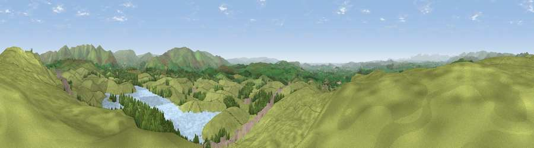

Viewpoint near Old Hutton
#3790 in England · top 12% of its area beats it · near Old HuttonThe view, rendered

A 360° render of this exact spot computed from the terrain model, tree cover and land cover — summer colours, afternoon light, calibrated against photographs of famous viewpoints. Real trees, hedges and buildings will differ in detail.
The panorama
Grey silhouette: terrain skyline in each direction (720 bearings, Earth curvature and refraction included). Dashed green: skyline with trees (+15 m) and buildings (+8 m) as obstacles. Blue strip: how far the ground is visible on each bearing.
Where the view opens
Wedge length = distance to the farthest visible ground on that bearing (vegetation-aware). Rings at 10, 25 and 50 km.
What fills the view
75% grassland · 12% woodland · 10% water · 2% built-up
Angular shares of the visible panorama (visual magnitude), not map area. Landscape diversity 0.35 (0–1 Shannon).
Key numbers
More beautiful places nearby
The staircase of upgrades: each row has a higher view potential than everything closer. Driving times are estimates from straight-line distance, calibrated against real road routing — check an actual route before setting out.
| Place | Direction | Drive | Score |
|---|---|---|---|
| Green Bank | N · 1 km | ~3 min | 74.1 |
| Viewpoint near Meal Bank | NW · 4 km | ~10 min | 75.7 |
| Viewpoint near Sedbergh | ENE · 8 km | ~17 min | 76.3 |
| Arant Haw | ENE · 9 km | ~17 min | 77.4 |
| Viewpoint near Middleton | SE · 9 km | ~18 min | 77.6 |
| Viewpoint c9961_7292 | NE · 9 km | ~19 min | 78.2 |
| Fell Head | NE · 10 km | ~19 min | 78.8 |
| Calf Top | ESE · 10 km | ~19 min | 79.8 |
54.31489, -2.64519 · source: screening · position refined by local search. Computed location — check access rights before visiting.